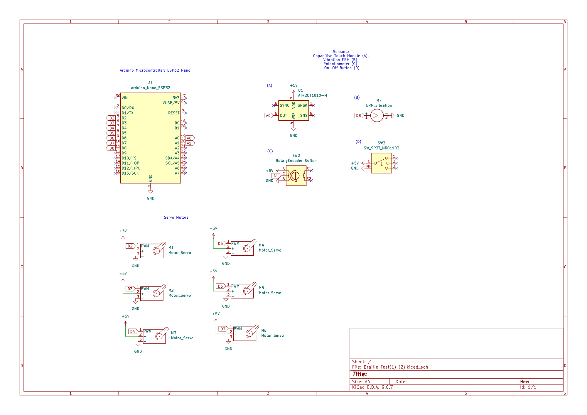

01Problem & Solution
Existing braille readers are bulky and range in cost from hundreds to thousands of dollars. Tactility is a novel braille reader designed to be portable, financially accessible (< $100), and effective for daily use. As part of a team, I developed firmware and user input integration for a device that turns text into a refreshable, 6-cell braille display through motors driving a rack and pinion mechanism.
02Electrical Sensors Work
- Specified device parts including user input sensors, sensory feedback motors, and motors used to drive braille pin movement.
- Wrote C++ firmware for processing user inputs and wrote functions for continuously translating inputs to update the device speed and reading mode state.
- Co-authored final device ESP32 scripts and circuit schematic.
- Conducted outreach to Easterseals, a nonprofit serving individuals with disabilities, to gather and implement product feedback.
- Conducted product research about needs in the assistive technology and braille reader market.

03Documentation
- See the code on GitHub: Tactility Repository
- See the design notebook: Design Notebook